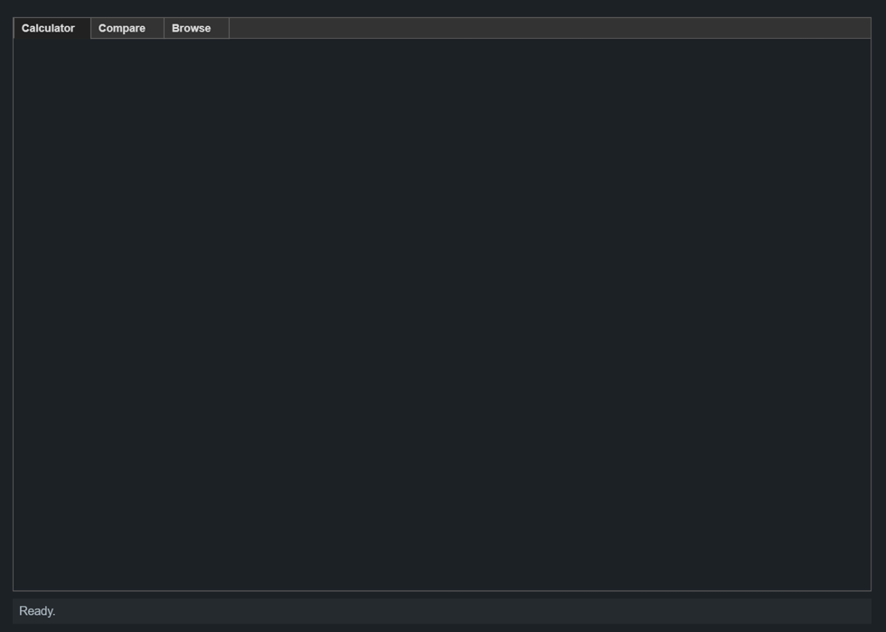
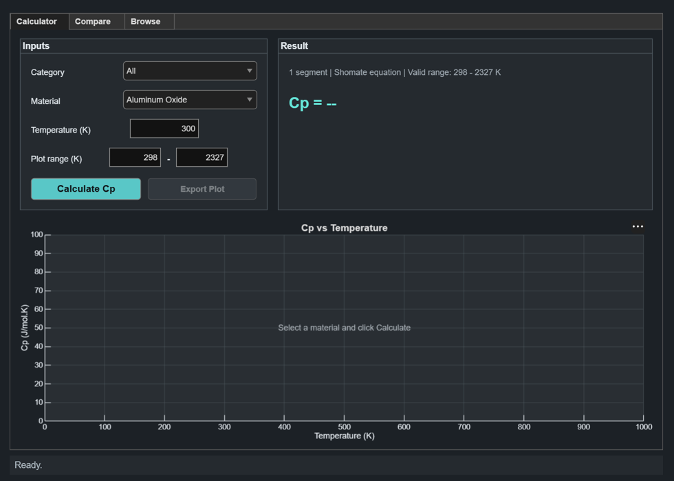

Contents
- ---- 0. COLOUR PALETTE ----------------------------------------
- ---- 1. LOAD THE DATABASE ------------------------------------
- ---- 2. MAIN WINDOW WITH 3 TABS + STATUS BAR -------------------
- ================================================================
- ================================================================
- ================================================================
- ================================================================
function code7
% ================================================================ % Cp vs T MATERIALS TOOL (simplified version for viva) % ---------------------------------------------------------------- % Reads Materials_Database_200_materials.xlsx and shows: % Tab 1 - Calculator : pick ONE material, type a temperature, % get Cp and a plot over a USER-CHOSEN % temperature range. Can export the plot as % an image. % Tab 2 - Compare : pick up to 3 materials, plot together over % a USER-CHOSEN temperature range. Can also % export the comparison plot as an image. % Tab 3 - Browse : search the whole database in a table. % % Every material ROW uses ONE of two calculation methods: % Shomate equation Cp = A + B*t + C/(t^2) (t = T/1000) % Tabulated data Cp = linear interpolation between % known (T,Cp) points from the literature % The column "Data_Type" tells us which one a row uses. % % NOTE ON MULTIPLE ROWS PER MATERIAL: % Some materials (e.g. Iron) have several Shomate equations, each % valid over a different temperature window (the equation changes % at a phase transition, like Iron's Curie point at 1042 K). So one % MATERIAL can correspond to SEVERAL ROWS in the table. Everywhere % below we first collect ALL rows belonging to the chosen material, % then pick the one row whose range actually contains the requested % temperature. This is what "idxList" means below. % % NOTE ON PLOT RANGE: % Each material still has a physically valid data range (its own % Tmin/Tmax from the database, possibly spanning several rows). The % user can type a custom plot range (Plot Tmin / Plot Tmax), but it % is always CLAMPED to the material's actual valid data range so the % tool never silently extrapolates the curve into nonsense territory. % If the requested range falls fully outside the valid range, or the % two fields are the wrong way round, the user is told why nothing % was plotted. % % NOTE ON NEGATIVE Cp: % Cp is never physically negative. Near the edges of a Shomate fit's % reliable window the polynomial can occasionally dip below zero even % though the fit's stated T_min/T_max still "allows" that temperature. % Any temperature where the computed Cp comes out negative is treated % as invalid and is left OUT of the plotted curve (as a genuine gap, % not bridged over) for every material -- see plotOneMaterial. % % NOTE ON STATUS MESSAGES: % Instead of modal uialert() popups (which block the UI and have to % be dismissed one at a time), all confirmations, warnings and errors % now appear in a single status bar at the very bottom of the window. % Messages fade out on their own after a few seconds -- see % showStatus() near the end of the setup code. % ================================================================
---- 0. COLOUR PALETTE ----------------------------------------
A small, cohesive DARK-MODE palette used across the UI (buttons + plot lines): dark charcoal-navy background with light foreground text/lines, inverted from a standard light theme. Curve colours are brightened so they stay readable against the dark plot background.
uiBg = [0.11 0.13 0.15]; % window / tab background (charcoal-navy) panelBg = [0.145 0.165 0.185]; % slightly-raised panel background panelLine = [0.30 0.34 0.37]; % subtle divider/border tone textColor = [0.88 0.90 0.92]; % general label text (light grey) mutedText = [0.62 0.66 0.69]; % secondary / hint text accent = [0.35 0.78 0.78]; % primary buttons (bright teal) accentTxt = [0.06 0.08 0.09]; % dark text on bright buttons neutral = [0.26 0.29 0.31]; % secondary buttons (dark grey) neutralTxt = [0.90 0.92 0.93]; % light text on dark buttons highlight = [0.40 0.90 0.85]; % result text / positive accent (bright teal) statusInfo = [0.70 0.75 0.78]; statusOk = [0.40 0.90 0.75]; statusWarn = [0.95 0.75 0.35]; statusErr = [0.95 0.40 0.40]; curveColors = [ ... 0.30 0.65 0.95; % bright ocean blue 1.00 0.55 0.25; % bright orange 0.30 0.85 0.60; % bright emerald 0.80 0.50 0.90; % bright plum 1.00 0.80 0.30; % bright amber 0.55 0.60 0.90]; % bright indigo
---- 1. LOAD THE DATABASE ------------------------------------
filename = 'Materials_Database_200_materials.xlsx'; if ~isfile(filename) error('Data file not found: %s (put it in the same folder as this script)', filename); end data = readtable(filename, 'VariableNamingRule', 'preserve', 'TextType', 'string'); allNames = string(data.MaterialName); materialNames = unique(allNames, 'stable'); % ONE dropdown entry per material categories = ["All"; unique(string(data.Category))]; % Name of the material behind the last successful calculation, used % only to build a sensible default filename when exporting the plot. lastCalcName = ""; % Names of the materials behind the last successful Compare plot, % used the same way for the Compare export's default filename. lastCmpNames = strings(0); % Timer object backing the fading status-bar messages (see showStatus). statusTimer = timer.empty;
---- 2. MAIN WINDOW WITH 3 TABS + STATUS BAR -------------------
fig = uifigure('Name', 'Cp vs T Materials Tool', 'Position', [80 40 980 700], 'Color', uiBg); fig.CloseRequestFcn = @(src,~) closeApp(); % -- global default font: bumped up from MATLAB's tiny default so % every label/dropdown/button/table created below inherits a more % readable size unless explicitly overridden. tabs = uitabgroup(fig, 'Position', [15 46 950 636], 'FontWeight', 'bold'); tabCalc = uitab(tabs, 'Title', ' Calculator ', 'BackgroundColor', uiBg); tabCompare = uitab(tabs, 'Title', ' Compare ', 'BackgroundColor', uiBg); tabBrowse = uitab(tabs, 'Title', ' Browse ', 'BackgroundColor', uiBg); % -- shared status bar (replaces uialert popups everywhere below) -- statusLbl = uilabel(fig, 'Text', ' Ready.', 'Position', [15 10 950 28], ... 'FontSize', 13, 'FontColor', statusInfo, 'BackgroundColor', panelBg); function showStatus(msg, type) % type: 'info' (default) | 'success' | 'warning' | 'error' if nargin < 2, type = 'info'; end switch type case 'success', col = statusOk; case 'warning', col = statusWarn; case 'error', col = statusErr; otherwise, col = statusInfo; end statusLbl.FontColor = col; statusLbl.Text = [' ' msg]; if ~isempty(statusTimer) && isvalid(statusTimer) stop(statusTimer); delete(statusTimer); end statusTimer = timer('StartDelay', 5, 'TimerFcn', @(~,~) clearStatusSafe(), ... 'ExecutionMode', 'singleShot'); start(statusTimer); end function clearStatusSafe() if isvalid(fig) statusLbl.Text = ' Ready.'; statusLbl.FontColor = statusInfo; end end function closeApp() if ~isempty(statusTimer) && isvalid(statusTimer) stop(statusTimer); delete(statusTimer); end delete(fig); end

================================================================
TAB 1 : CALCULATOR ================================================================ Inputs live inside a bordered panel so the tab reads as distinct "input" vs "output" regions instead of a flat form of loose fields.
calcPanel = uipanel(tabCalc, 'Position', [15 350 360 250], ... 'BackgroundColor', panelBg, 'BorderColor', panelLine, 'BorderWidth', 1, 'Title', 'Inputs', ... 'ForegroundColor', textColor, 'FontWeight', 'bold', 'FontSize', 13); uilabel(calcPanel, 'Text', 'Category', 'Position', [16 190 100 24], 'FontColor', textColor); catDrop = uidropdown(calcPanel, 'Items', cellstr(categories), 'Position', [150 190 195 28]); uilabel(calcPanel, 'Text', 'Material', 'Position', [16 148 100 24], 'FontColor', textColor); matDrop = uidropdown(calcPanel, 'Items', cellstr(materialNames), 'Position', [150 148 195 28]); uilabel(calcPanel, 'Text', 'Temperature (K)', 'Position', [16 106 140 24], 'FontColor', textColor); tempField = uieditfield(calcPanel, 'numeric', 'Position', [160 106 100 28], 'Value', 300); uilabel(calcPanel, 'Text', 'Plot range (K)', 'Position', [16 64 110 24], 'FontColor', textColor); plotTminField = uieditfield(calcPanel, 'numeric', 'Position', [130 64 75 28]); uilabel(calcPanel, 'Text', '-', 'Position', [208 64 16 24], 'FontColor', textColor, ... 'HorizontalAlignment', 'center', 'FontWeight', 'bold'); plotTmaxField = uieditfield(calcPanel, 'numeric', 'Position', [227 64 75 28]); calcBtn = uibutton(calcPanel, 'push', 'Text', 'Calculate Cp', ... 'Position', [16 16 160 32], 'BackgroundColor', accent, 'FontColor', accentTxt, ... 'FontWeight', 'bold', 'FontSize', 14); exportCalcFigBtn = uibutton(calcPanel, 'push', 'Text', 'Export Plot', ... 'Position', [186 16 158 32], 'Enable', 'off', ... 'BackgroundColor', neutral, 'FontColor', neutralTxt, 'FontWeight', 'bold'); % Result / info readout, to the right of the input panel, inside its % own panel so it visually matches the Inputs panel on the left. resultPanel = uipanel(tabCalc, 'Position', [390 350 545 250], ... 'BackgroundColor', panelBg, 'BorderColor', panelLine, 'BorderWidth', 1, 'Title', 'Result', ... 'ForegroundColor', textColor, 'FontWeight', 'bold', 'FontSize', 13); matAvailLbl = uilabel(resultPanel, 'Text', '', ... 'Position', [16 190 515 24], 'FontSize', 12, 'FontColor', mutedText); resultLbl = uilabel(resultPanel, 'Text', 'Cp = --', ... 'Position', [16 140 515 36], 'FontSize', 22, 'FontWeight', 'bold', 'FontColor', highlight); infoLbl = uilabel(resultPanel, 'Text', '', ... 'Position', [16 20 515 110], 'FontSize', 12, 'FontColor', textColor); calcAxes = uiaxes(tabCalc, 'Position', [15 15 920 320]); styleAxes(calcAxes, curveColors, panelLine, textColor); resetAxes(calcAxes, 'Cp vs Temperature', 'Select a material and click Calculate'); % (uiaxes already gives zoom / pan / data-tip tools automatically -- % no extra code needed, they are on the toolbar above the plot.) % -- update material list when category changes -- catDrop.ValueChangedFcn = @(src,~) updateMaterialList(); function updateMaterialList() chosenCat = string(catDrop.Value); if chosenCat == "All" list = materialNames; else % a material's category is read from its first row list = materialNames(arrayfun(@(m) ... data.Category(find(allNames==m,1))==chosenCat, materialNames)); end matDrop.Items = cellstr(list); updatePlotRangeDefaults(); % keep the range fields in sync with the new list end % -- whenever the chosen material changes, default the plot % range fields to that material's own full valid data range -- matDrop.ValueChangedFcn = @(src,~) updatePlotRangeDefaults(); function updatePlotRangeDefaults() name = string(matDrop.Value); idxList = find(allNames == name); if isempty(idxList) return; end plotTminField.Value = min(data.("T_min (K)")(idxList)); plotTmaxField.Value = max(data.("T_max (K)")(idxList)); updateMaterialAvailability(idxList); end function updateMaterialAvailability(idxList) % Builds the short "what data is available" note shown above % the result: how many temperature segments this material has, % which method(s) they use, and the overall valid range. Tmin = min(data.("T_min (K)")(idxList)); Tmax = max(data.("T_max (K)")(idxList)); types = unique(lower(string(data.Data_Type(idxList)))); isShomate = any(contains(types, 'shomate')); isTable = any(~contains(types, 'shomate')); if isShomate && isTable methodTxt = 'Shomate + tabulated data'; elseif isShomate methodTxt = 'Shomate equation'; else methodTxt = 'Tabulated data'; end nSeg = numel(idxList); if nSeg > 1 segTxt = sprintf('%d segments', nSeg); else segTxt = '1 segment'; end matAvailLbl.Text = sprintf('%s | %s | Valid range: %.0f - %.0f K', segTxt, methodTxt, Tmin, Tmax); end updatePlotRangeDefaults(); % populate on startup for the first material in the list calcBtn.ButtonPushedFcn = @(src,~) runCalculator(); function runCalculator() name = string(matDrop.Value); idxList = find(allNames == name); % ALL rows for this material if isempty(idxList), return; end Tmin = min(data.("T_min (K)")(idxList)); Tmax = max(data.("T_max (K)")(idxList)); T = tempField.Value; % --- required feature: warn if T is outside the valid range --- if isnan(T) || T < Tmin || T > Tmax resultLbl.Text = 'OUT OF RANGE'; resultLbl.FontColor = statusErr; infoLbl.Text = sprintf('Valid range for %s: %.1f - %.1f K', name, Tmin, Tmax); resetAxes(calcAxes, 'Cp vs Temperature', ... sprintf('%.1f K is outside the valid range (%.1f - %.1f K)', T, Tmin, Tmax)); exportCalcFigBtn.Enable = 'off'; lastCalcName = ""; showStatus(sprintf('%.1f K is outside %s''s valid range (%.1f - %.1f K).', T, name, Tmin, Tmax), 'error'); return; end % --- validate / clamp the user's requested plot range --- reqTmin = plotTminField.Value; reqTmax = plotTmaxField.Value; if isnan(reqTmin) || isnan(reqTmax) || reqTmin >= reqTmax showStatus('Plot range Tmin must be a number smaller than Tmax.', 'error'); return; end [cp, method, row] = getCpMulti(data, idxList, T); resultLbl.Text = sprintf('Cp = %.3f J/mol.K', cp); resultLbl.FontColor = highlight; infoLbl.Text = sprintf('%s (%s) | Category: %s | Method: %s | Source: %s', ... string(data.MaterialName(row)), string(data.Formula(row)), string(data.Category(row)), ... string(method), string(data.Source_Reference(row))); % Cp is never physically negative -- flag it if the fit gives % a non-physical value right at this specific temperature. if cp < 0 resultLbl.Text = sprintf('Cp = %.3f J/mol.K (non-physical)', cp); resultLbl.FontColor = statusErr; infoLbl.Text = sprintf('%s | Note: negative Cp at %.1f K is non-physical (edge of the fit''s reliable window); this temperature is excluded from the plotted curve.', ... infoLbl.Text, T); end cla(calcAxes); Tcurve = []; try Tcurve = plotOneMaterial(calcAxes, data, idxList, curveColors(1,:), reqTmin, reqTmax); catch ME showStatus(sprintf('Plotting failed: %s', ME.message), 'error'); end if isempty(Tcurve) resetAxes(calcAxes, 'Cp vs Temperature', ... sprintf('No overlap between requested range (%.1f - %.1f K) and valid data (%.1f - %.1f K)', ... reqTmin, reqTmax, Tmin, Tmax)); showStatus('No data in the requested plot range.', 'warning'); else % Let the user know if their requested range was clamped % to the material's actual valid data range. plottedTmin = min(Tcurve); plottedTmax = max(Tcurve); title(calcAxes, ['Cp vs Temperature - ' char(name)]); xlabel(calcAxes, 'Temperature (K)'); ylabel(calcAxes, 'Cp (J/mol.K)'); grid(calcAxes, 'on'); if plottedTmin > reqTmin + 1e-6 || plottedTmax < reqTmax - 1e-6 infoLbl.Text = sprintf('%s | Plotted range clamped to %.1f - %.1f K (material valid range)', ... infoLbl.Text, plottedTmin, plottedTmax); showStatus(sprintf('Calculated Cp for %s (plot range clamped to valid data).', name), 'success'); else showStatus(sprintf('Calculated Cp for %s.', name), 'success'); end end lastCalcName = name; exportCalcFigBtn.Enable = matlab.lang.OnOffSwitchState(~isempty(Tcurve)); end exportCalcFigBtn.ButtonPushedFcn = @(src,~) exportCalcFigure(); function exportCalcFigure() if lastCalcName == "" showStatus('Calculate a curve first.', 'warning'); return; end defaultName = sprintf('%s_Cp_vs_T.png', matlab.lang.makeValidName(lastCalcName)); [f, p] = uiputfile({'*.png';'*.jpg';'*.pdf'}, 'Export plot image', defaultName); if isequal(f, 0), return; end try exportgraphics(calcAxes, fullfile(p, f), 'Resolution', 200); showStatus(sprintf('Saved to %s', fullfile(p, f)), 'success'); catch ME showStatus(sprintf('Export failed: %s', ME.message), 'error'); end end

================================================================
TAB 2 : COMPARE (up to 3 materials on one graph) ================================================================
cmpPanel = uipanel(tabCompare, 'Position', [15 425 920 205], ... 'BackgroundColor', panelBg, 'BorderColor', panelLine, 'BorderWidth', 1, 'Title', 'Inputs', ... 'ForegroundColor', textColor, 'FontWeight', 'bold', 'FontSize', 13); uilabel(cmpPanel, 'Text', 'Pick up to 3 materials to compare their Cp curves:', ... 'Position', [16 160 500 24], 'FontColor', textColor, 'FontWeight', 'bold'); % Each row has its OWN Category dropdown that filters the Material % dropdown next to it, same pattern as the Calculator tab. cmpCatDrop = gobjects(3,1); cmpDrop = gobjects(3,1); for i = 1:3 rowY = 160 - 40*i; uilabel(cmpPanel, 'Text', sprintf('Material %d', i), 'Position', [16 rowY 90 24], 'FontColor', textColor); cmpCatDrop(i) = uidropdown(cmpPanel, 'Items', cellstr(categories), ... 'Position', [115 rowY 165 28]); cmpDrop(i) = uidropdown(cmpPanel, 'Items', ['None'; cellstr(materialNames)], ... 'Position', [290 rowY 270 28]); end % -- user-defined plot range applied to every curve in Compare -- uilabel(cmpPanel, 'Text', 'Plot range (K)', 'Position', [610 160 110 24], 'FontColor', textColor, 'FontWeight', 'bold'); cmpTminField = uieditfield(cmpPanel, 'numeric', 'Position', [610 128 84 28], 'Value', 0); uilabel(cmpPanel, 'Text', '-', 'Position', [698 128 16 24], 'FontColor', textColor, ... 'HorizontalAlignment', 'center', 'FontWeight', 'bold'); cmpTmaxField = uieditfield(cmpPanel, 'numeric', 'Position', [717 128 84 28], 'Value', 3000); cmpBtn = uibutton(cmpPanel, 'push', 'Text', 'Compare', 'Position', [610 20 140 32], ... 'BackgroundColor', accent, 'FontColor', accentTxt, 'FontWeight', 'bold', 'FontSize', 14); cmpClearBtn = uibutton(cmpPanel, 'push', 'Text', 'Clear all', 'Position', [760 20 140 32], ... 'BackgroundColor', neutral, 'FontColor', neutralTxt, 'FontWeight', 'bold'); % Placed on its own row above Compare/Clear so it doesn't crowd them. exportCmpFigBtn = uibutton(cmpPanel, 'push', 'Text', 'Export Comparison Plot', ... 'Position', [610 60 290 32], 'Enable', 'off', ... 'BackgroundColor', neutral, 'FontColor', neutralTxt, 'FontWeight', 'bold'); cmpAxes = uiaxes(tabCompare, 'Position', [15 15 920 400]); styleAxes(cmpAxes, curveColors, panelLine, textColor); resetAxes(cmpAxes, 'Cp Comparison', 'Pick materials and click Compare'); % -- category -> material filtering, one pair per row -- for i = 1:3 cmpCatDrop(i).ValueChangedFcn = @(src,~) updateCompareMaterialList(i); end function updateCompareMaterialList(i) chosenCat = string(cmpCatDrop(i).Value); prevChoice = string(cmpDrop(i).Value); % try to keep the current pick if still valid if chosenCat == "All" list = materialNames; else list = materialNames(arrayfun(@(m) ... data.Category(find(allNames==m,1))==chosenCat, materialNames)); end cmpDrop(i).Items = ['None'; cellstr(list)]; if any(list == prevChoice) cmpDrop(i).Value = char(prevChoice); else cmpDrop(i).Value = 'None'; end end cmpBtn.ButtonPushedFcn = @(src,~) runCompare(); function runCompare() reqTmin = cmpTminField.Value; reqTmax = cmpTmaxField.Value; if isnan(reqTmin) || isnan(reqTmax) || reqTmin >= reqTmax showStatus('Plot range Tmin must be a number smaller than Tmax.', 'error'); return; end cla(cmpAxes); hold(cmpAxes, 'on'); plottedAny = false; plottedNames = strings(0); skipped = strings(0); colorIdx = 1; for i = 1:3 chosen = string(cmpDrop(i).Value); if chosen == "None", continue; end idxList = find(allNames == chosen); if isempty(idxList), continue; end Tcurve = plotOneMaterial(cmpAxes, data, idxList, ... curveColors(mod(colorIdx-1, size(curveColors,1))+1, :), reqTmin, reqTmax); if isempty(Tcurve) skipped(end+1) = chosen; %#ok<AGROW> else colorIdx = colorIdx + 1; plottedAny = true; plottedNames(end+1) = chosen; %#ok<AGROW> end end hold(cmpAxes, 'off'); if plottedAny title(cmpAxes, sprintf('Cp Comparison (%.0f - %.0f K)', reqTmin, reqTmax)); xlabel(cmpAxes, 'Temperature (K)'); ylabel(cmpAxes, 'Cp (J/mol.K)'); grid(cmpAxes, 'on'); legend(cmpAxes, 'show', 'Location', 'best'); showStatus(sprintf('Plotted: %s', strjoin(plottedNames, ', ')), 'success'); else resetAxes(cmpAxes, 'Cp Comparison', ... sprintf('None of the selected materials have data in %.1f - %.1f K', reqTmin, reqTmax)); showStatus('None of the selected materials have data in that range.', 'warning'); end if ~isempty(skipped) && plottedAny showStatus(sprintf('Plotted: %s | No data in range for: %s', ... strjoin(plottedNames, ', '), strjoin(skipped, ', ')), 'warning'); end lastCmpNames = plottedNames; exportCmpFigBtn.Enable = matlab.lang.OnOffSwitchState(plottedAny); end cmpClearBtn.ButtonPushedFcn = @(src,~) clearCompare(); function clearCompare() % Resets every row back to its starting state (category "All", % material "None"), restores the default plot range, and wipes % the plot back to its placeholder message. for i = 1:3 cmpCatDrop(i).Value = 'All'; cmpDrop(i).Items = ['None'; cellstr(materialNames)]; cmpDrop(i).Value = 'None'; end cmpTminField.Value = 0; cmpTmaxField.Value = 3000; resetAxes(cmpAxes, 'Cp Comparison', 'Pick materials and click Compare'); lastCmpNames = strings(0); exportCmpFigBtn.Enable = 'off'; showStatus('Cleared.', 'info'); end exportCmpFigBtn.ButtonPushedFcn = @(src,~) exportCmpFigure(); function exportCmpFigure() if isempty(lastCmpNames) showStatus('Compare some materials first.', 'warning'); return; end joined = strjoin(lastCmpNames, '_vs_'); if strlength(joined) > 60 joined = extractBefore(joined, 60) + "_etc"; end defaultName = sprintf('%s_Cp_Comparison.png', matlab.lang.makeValidName(joined)); [f, p] = uiputfile({'*.png';'*.jpg';'*.pdf'}, 'Export comparison plot image', defaultName); if isequal(f, 0), return; end try exportgraphics(cmpAxes, fullfile(p, f), 'Resolution', 200); showStatus(sprintf('Saved to %s', fullfile(p, f)), 'success'); catch ME showStatus(sprintf('Export failed: %s', ME.message), 'error'); end end
================================================================
TAB 3 : BROWSE / SEARCH THE DATABASE ================================================================ Everything a user can filter/sort by lives inside one clearly titled "Filters & sort" panel at the top, instead of loose controls scattered directly on the tab -- this matches the panel treatment used on the Calculator/Compare tabs and makes the tab read as "controls, then results" rather than one flat wall of widgets.
browsePanel = uipanel(tabBrowse, 'Position', [15 555 920 90], ... 'BackgroundColor', panelBg, 'BorderColor', panelLine, 'BorderWidth', 1, 'Title', 'Filters & sort', ... 'ForegroundColor', textColor, 'FontWeight', 'bold', 'FontSize', 13); uilabel(browsePanel, 'Text', 'Search name', 'Position', [16 34 100 24], 'FontColor', textColor); searchField = uieditfield(browsePanel, 'text', 'Position', [16 8 190 28]); uilabel(browsePanel, 'Text', 'Category', 'Position', [222 34 100 24], 'FontColor', textColor); browseCatDrop = uidropdown(browsePanel, 'Items', cellstr(categories), 'Position', [222 8 160 28]); % -- explicit "Sort by" controls, in addition to clickable column % headers -- clicking a header sorts a table, but that behaviour % is easy to miss, so a labelled dropdown + direction toggle makes % sorting obvious and discoverable without hunting for it. sortableCols = string(displayDataColumns()); uilabel(browsePanel, 'Text', 'Sort by', 'Position', [398 34 100 24], 'FontColor', textColor); sortColDrop = uidropdown(browsePanel, 'Items', cellstr(sortableCols), 'Position', [398 8 190 28]); sortDirBtn = uibutton(browsePanel, 'state', 'Text', char(hex2dec('2191')) + " Ascending", ... 'Position', [598 8 130 28], 'Value', true, ... 'BackgroundColor', neutral, 'FontColor', neutralTxt, 'FontWeight', 'bold'); searchBtn = uibutton(browsePanel, 'push', 'Text', 'Apply', 'Position', [740 34 80 28], ... 'BackgroundColor', accent, 'FontColor', accentTxt, 'FontWeight', 'bold'); showAllBtn = uibutton(browsePanel, 'push', 'Text', 'Reset', 'Position', [830 34 80 28], ... 'BackgroundColor', neutral, 'FontColor', neutralTxt, 'FontWeight', 'bold'); browseCountLbl = uilabel(tabBrowse, 'Text', '', 'Position', [15 528 900 22], ... 'FontColor', mutedText, 'FontSize', 12); displayData = data; if ismember('Phase_Notes', displayData.Properties.VariableNames) displayData.Phase_Notes = []; % too long to show nicely in a table end if ismember('T_points', displayData.Properties.VariableNames) displayData.T_points = []; displayData.Cp_points = []; end browseTable = uitable(tabBrowse, 'Data', displayData, 'Position', [15 15 920 505], ... 'ColumnWidth', 'auto', 'ColumnSortable', true, 'FontSize', 12, ... 'BackgroundColor', [0.16 0.18 0.20; 0.185 0.205 0.225], ... 'ForegroundColor', textColor, 'RowStriping', 'on'); browseCountLbl.Text = sprintf('%d of %d materials shown | tip: click a column header, or use Sort by above', ... height(displayData), height(displayData)); function cols = displayDataColumns() % Column list for the Sort-by dropdown, built the same way % displayData itself is (drops the long free-text columns % that aren't meaningful to sort by). tmp = data; if ismember('Phase_Notes', tmp.Properties.VariableNames) tmp.Phase_Notes = []; end if ismember('T_points', tmp.Properties.VariableNames) tmp.T_points = []; tmp.Cp_points = []; end cols = tmp.Properties.VariableNames; end browseCatDrop.ValueChangedFcn = @(src,~) applyBrowseFilter(); searchBtn.ButtonPushedFcn = @(src,~) applyBrowseFilter(); sortColDrop.ValueChangedFcn = @(src,~) applyBrowseFilter(); sortDirBtn.ValueChangedFcn = @(src,~) toggleSortDir(); function toggleSortDir() if sortDirBtn.Value sortDirBtn.Text = char(hex2dec('2191')) + " Ascending"; else sortDirBtn.Text = char(hex2dec('2193')) + " Descending"; end applyBrowseFilter(); end function applyBrowseFilter() % Combines the text search, category picker AND the explicit % Sort-by controls -- all applied together so you can e.g. % search "oxide" within just the "Ceramic" category and have % the results sorted by, say, Cp or T_max. q = lower(strtrim(string(searchField.Value))); chosenCat = string(browseCatDrop.Value); mask = true(height(displayData), 1); if q ~= "" mask = mask & contains(lower(string(displayData.MaterialName)), q); end if chosenCat ~= "All" mask = mask & (string(displayData.Category) == chosenCat); end filtered = displayData(mask, :); sortCol = string(sortColDrop.Value); if ismember(sortCol, filtered.Properties.VariableNames) && height(filtered) > 1 if sortDirBtn.Value dirn = 'ascend'; else dirn = 'descend'; end filtered = sortrows(filtered, sortCol, dirn); end browseTable.Data = filtered; browseCountLbl.Text = sprintf('%d of %d materials shown | sorted by %s (%s)', ... sum(mask), height(displayData), sortCol, dirn2word(sortDirBtn.Value)); end function w = dirn2word(isAsc) if isAsc, w = 'ascending'; else, w = 'descending'; end end showAllBtn.ButtonPushedFcn = @(src,~) resetSearch(); function resetSearch() searchField.Value = ''; browseCatDrop.Value = 'All'; sortColDrop.Value = char(sortableCols(1)); sortDirBtn.Value = true; sortDirBtn.Text = char(hex2dec('2191')) + " Ascending"; browseTable.Data = displayData; browseCountLbl.Text = sprintf('%d of %d materials shown (click a column header, or use Sort by above)', ... height(displayData), height(displayData)); end
end % main function
================================================================
HELPER FUNCTIONS (shared calculation logic) ================================================================
function [cp, method] = getCp(data, idx, T) % Returns Cp at temperature T using the SINGLE row at idx. % Uses Shomate equation OR linear interpolation, based on Data_Type. dataType = string(data.Data_Type(idx)); if contains(lower(dataType), 'shomate') A = data.A(idx); B = data.B(idx); C = data.C(idx); D = data.D(idx); E = data.E(idx); t = T / 1000; cp = A + B*t + C/(t^2); method = 'Shomate equation'; else Tpts = parseNumbers(data.T_points(idx)); Cppts = parseNumbers(data.Cp_points(idx)); [Tpts, order] = sort(Tpts); Cppts = Cppts(order); [Tpts, u] = unique(Tpts); Cppts = Cppts(u); if length(Tpts) < 2 % Only one known data point -- can't interpolate a line, % so just return that single measured value directly. cp = Cppts(1); else cp = interp1(Tpts, Cppts, T, 'linear', 'extrap'); end method = 'Interpolated from tabulated data'; end end function [cp, method, row] = getCpMulti(data, idxList, T) % A material can have SEVERAL rows (one equation per temperature % sub-range, e.g. Iron: 298-700K, 700-1042K, 1042-1100K, 1100-1809K). % This picks whichever row actually covers the requested T, then % calls getCp on that one row. Returns which row was used (row) so % the caller can display its Source/Notes correctly. Tmins = data.("T_min (K)")(idxList); Tmaxs = data.("T_max (K)")(idxList); within = idxList(T >= Tmins & T <= Tmaxs); if isempty(within) % Shouldn't normally happen (caller already range-checked the % overall min/max), but guard anyway in case of a gap between % sub-ranges. [~, nearest] = min(abs(Tmins - T) + abs(Tmaxs - T)); row = idxList(nearest); else row = within(1); end [cp, method] = getCp(data, row, T); end function Tout = plotOneMaterial(ax, data, idxList, lineColor, reqTmin, reqTmax) % Plots the Cp(T) curve for one material across ALL of its rows % (i.e. across every temperature sub-range it has), as one continuous % line. idxList = every row index belonging to this material. % lineColor is the [r g b] colour to draw this curve in. % % reqTmin/reqTmax (both OPTIONAL): a user-requested plotting window. % If given, the curve is drawn over intersect(reqRange, materialRange) % instead of the material's full valid range -- the requested window % is always CLAMPED to what the data can actually support, so the % curve is never extrapolated beyond its literature-backed range. % If omitted, behaves as before and uses the material's full range. % % Returns the plotted T points (or [] if nothing could be plotted, % e.g. no overlap between the requested window and the material's % valid data range). Tout = []; Tmin = min(data.("T_min (K)")(idxList)); Tmax = max(data.("T_max (K)")(idxList)); name = char(data.MaterialName(idxList(1))); if isnan(Tmin) || isnan(Tmax) return; end % -- apply and clamp the user-requested plot window, if given -- if nargin >= 6 && ~isnan(reqTmin) && ~isnan(reqTmax) Tmin = max(Tmin, reqTmin); Tmax = min(Tmax, reqTmax); if isnan(Tmin) || isnan(Tmax) || Tmin > Tmax return; % requested window doesn't overlap the material's valid data at all end end if Tmax <= Tmin % Only one usable temperature in the (possibly clamped) window -- % draw it as a single marker instead of trying to build a % 200-point line out of nothing. try cp0 = getCpMulti(data, idxList, Tmin); if cp0 >= 0 % Cp is never physically negative -- skip a negative single point plot(ax, Tmin, cp0, 'o', 'MarkerSize', 8, 'LineWidth', 1.8, ... 'Color', lineColor, 'DisplayName', name); Tout = Tmin; end catch % nothing usable to plot for this material end return; end T = linspace(Tmin, Tmax, 300); Cp = nan(size(T)); for k = 1:length(T) try val = getCpMulti(data, idxList, T(k)); if val < 0 % Cp is never physically negative -- treat this point as % invalid rather than plotting a non-physical curve. This % typically happens right at the edge of a Shomate fit's % reliable window. Cp(k) = NaN; else Cp(k) = val; end catch Cp(k) = NaN; % skip points that fail rather than aborting everything end end valid = ~isnan(Cp); if ~any(valid) return; end % Plot with the NaNs left IN PLACE (not filtered out) so MATLAB draws % a genuine gap wherever Cp was negative/invalid, instead of joining % the two valid sides of the gap with a misleading straight line. plot(ax, T, Cp, 'LineWidth', 2, 'Color', lineColor, 'DisplayName', name); Tout = T(valid); end function styleAxes(ax, curveColors, gridColor, textCol) % Applies the dark-mode plot styling shared by the Calculator and % Compare axes: dark plot background, bright curve colours, and % light grid/axis text so they read clearly against the dark background. ax.Color = [0.16 0.18 0.20]; ax.ColorOrder = curveColors; ax.GridColor = gridColor; ax.GridAlpha = 0.5; ax.XColor = textCol; ax.YColor = textCol; ax.FontSize = 11; ax.Title.FontSize = 14; ax.Title.FontWeight = 'bold'; ax.XLabel.FontSize = 12; ax.YLabel.FontSize = 12; end function resetAxes(ax, titleText, messageText) % Gives the axes a sensible starting look instead of MATLAB's raw % [0,1] x [0,1] default (which is what made the "blank" plot look % broken). Shows a short instruction/message in the middle. cla(ax); xlim(ax, [0 1000]); ylim(ax, [0 100]); title(ax, titleText); xlabel(ax, 'Temperature (K)'); ylabel(ax, 'Cp (J/mol.K)'); grid(ax, 'on'); text(ax, 500, 50, messageText, 'HorizontalAlignment', 'center', ... 'Color', [0.65 0.68 0.70], 'FontSize', 12); end function nums = parseNumbers(value) % Converts a comma-separated string like "298, 300, 400" into numbers. if iscell(value), value = value{1}; end if isnumeric(value), nums = value; return; end if ismissing(string(value)), nums = []; return; end s = char(string(value)); s = strrep(s, ',', ' '); s = strrep(s, ';', ' '); nums = sscanf(s, '%f').'; end